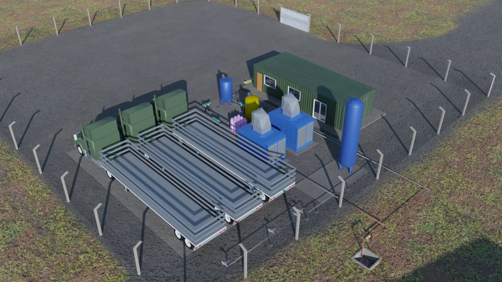
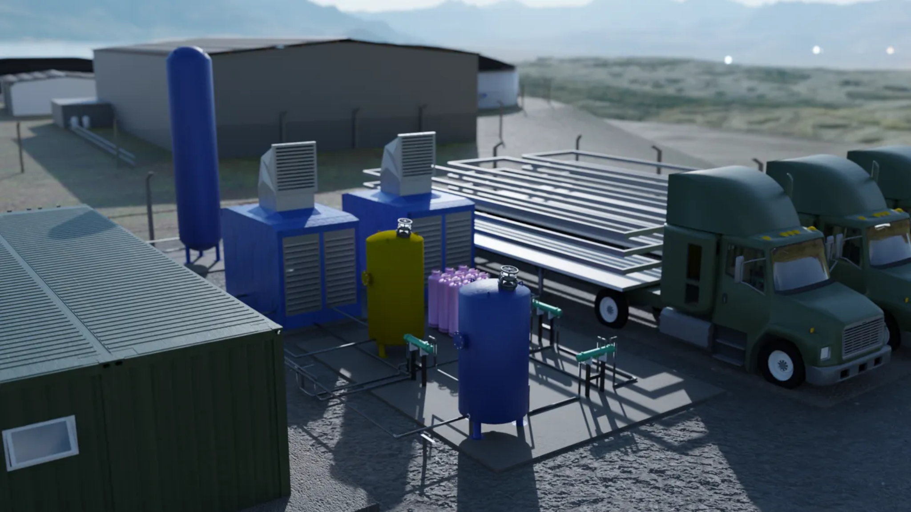
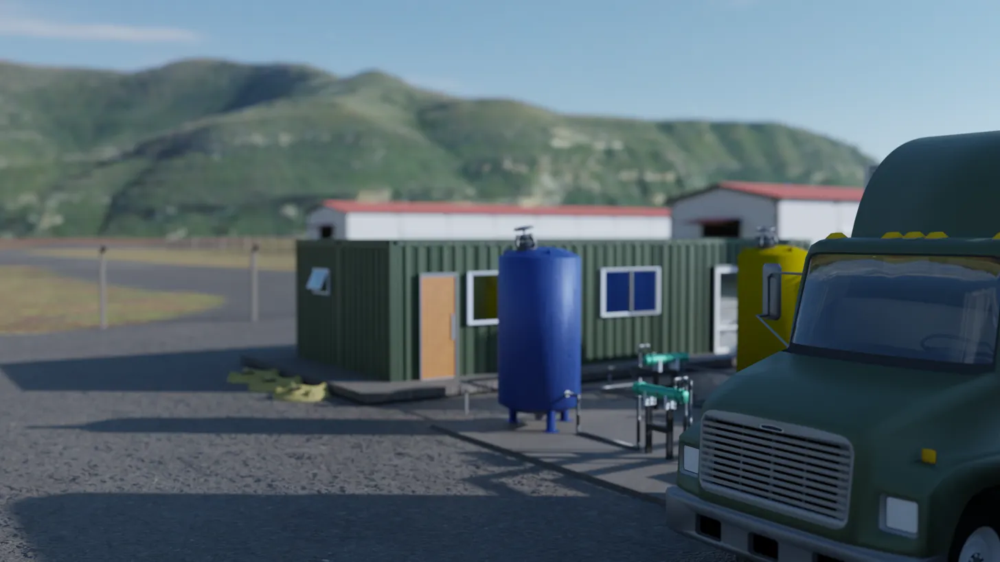

Engenheiro Civil · Técnico Eletromecânico · Itajaí — SC Civil Engineer · Electromechanical Technician · Itajaí — SC Ingeniero Civil · Técnico Electromecánico · Itajaí — SC
Projetos de biodigestores, sistemas de biogás, plantas de tratamento de água e infraestrutura industrial — da concepção ao detalhamento técnico. Biodigester design, biogas systems, water treatment plants and industrial infrastructure — from concept to technical detailing. Diseño de biodigestores, sistemas de biogás, plantas de tratamiento de agua e infraestructura industrial — desde la concepción hasta el detalle técnico.



01 — Perfil 01 — Profile 01 — Perfil
Sou João Madeira, engenheiro civil e técnico em eletromecânica, baseado em Itajaí — SC. Minha atuação foca em sistemas de tratamento de efluentes, geração de biogás e infraestrutura industrial sustentável, unindo o rigor técnico da engenharia com soluções que fazem sentido para o ambiente e para o cliente. I'm João Madeira, a civil engineer and electromechanical technician based in Itajaí — SC. My work focuses on effluent treatment systems, biogas generation and sustainable industrial infrastructure, combining engineering rigor with solutions that make sense for the environment and the client. Soy João Madeira, ingeniero civil y técnico en electromecánica, con base en Itajaí — SC. Mi trabajo se centra en sistemas de tratamiento de efluentes, generación de biogás e infraestructura industrial sostenible, combinando el rigor técnico con soluciones que tienen sentido para el medio ambiente y el cliente.
Domino ferramentas como Revit, AutoCAD e SketchUp para modelagem e detalhamento, e tenho experiência em configuração de redes e servidores, o que me permite entregar projetos completos com documentação técnica robusta. I master tools like Revit, AutoCAD and SketchUp for modeling and detailing, and have experience in network and server configuration, allowing me to deliver complete projects with robust technical documentation. Domino herramientas como Revit, AutoCAD y SketchUp para modelado y detallado, y tengo experiencia en configuración de redes y servidores, lo que me permite entregar proyectos completos con documentación técnica robusta.
02 — Projetos 02 — Projects 02 — Proyectos
Projeto completo de sistema de captura, tratamento e aproveitamento de biogás. Inclui biodigestores, skid de compressão, sistema de purificação e layout geral de implantação. Complete biogas capture, treatment and utilization system. Includes biodigesters, compression skid, purification system and general implementation layout. Sistema completo de captura, tratamiento y aprovechamiento de biogás. Incluye biodigestores, skid de compresión, sistema de purificación y layout general de implantación.
Leiaute geral de planta de biometano com skids CH4 e CO2, sistema de compressão e carregamento de módulos de transporte. General layout of biomethane plant with CH4 and CO2 skids, compression system and transport module loading. Layout general de planta de biometano con skids CH4 y CO2, sistema de compresión y carga de módulos de transporte.
Detalhamento técnico de tuberías de entrada e saída de biodigestor com gerador de oxigênio, caixas de saída e sistema de distribuição interna. Technical detailing of biodigester inlet/outlet piping with oxygen generator, outlet boxes and internal distribution system. Detalle técnico de tuberías de entrada y salida de biodigestor con generador de oxígeno, cajas de salida y sistema de distribución interna.
Projetos de ETA/ETE com decantadores laminares, sistemas de flotação, filtração e dosagem de produtos químicos para diferentes capacidades industriais. WTP/WWTP projects with laminar settlers, flotation systems, filtration and chemical dosing for different industrial capacities. Proyectos de PTAP/PTAR con decantadores laminares, sistemas de flotación, filtración y dosificación de químicos para diferentes capacidades industriales.
Configuração e implantação de sistemas de rede para servidores industriais, incluindo cabeamento estruturado, switching e gestão de tráfego. Configuration and deployment of network systems for industrial servers, including structured cabling, switching and traffic management. Configuración e implantación de sistemas de red para servidores industriales, incluyendo cableado estructurado, switching y gestión de tráfico.
03 — Serviços 03 — Services 03 — Servicios
04 — Contato 04 — Contact 04 — Contacto
Aberto a projetos de engenharia, consultoria técnica e parcerias em desenvolvimento de sistemas ambientais e industriais. Open to engineering projects, technical consulting and partnerships in environmental and industrial systems development. Abierto a proyectos de ingeniería, consultoría técnica y alianzas en desarrollo de sistemas ambientales e industriales.